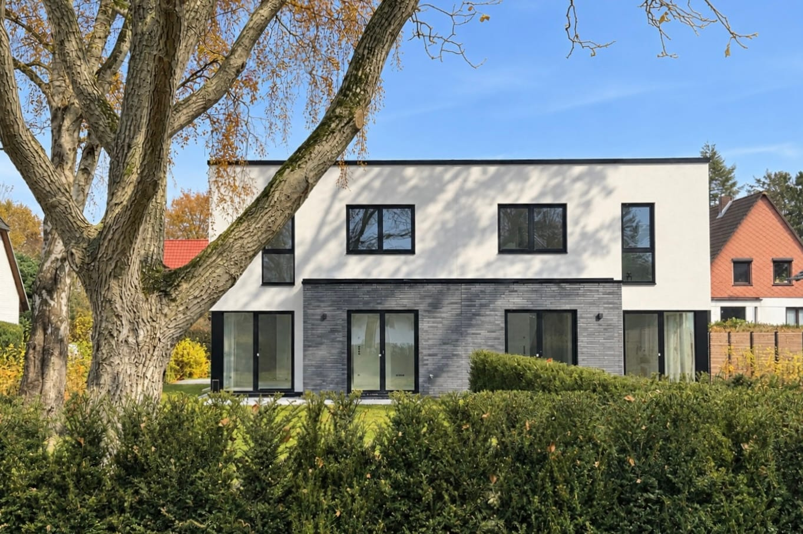
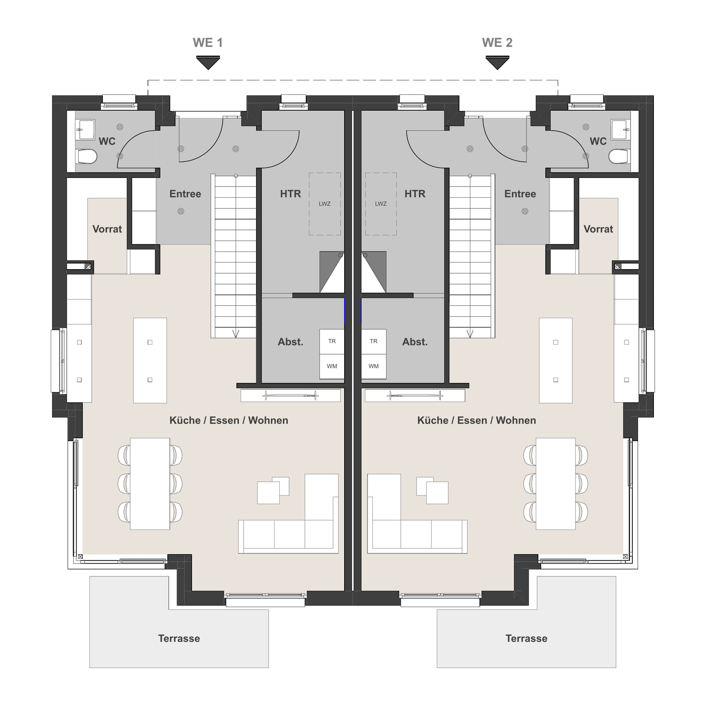
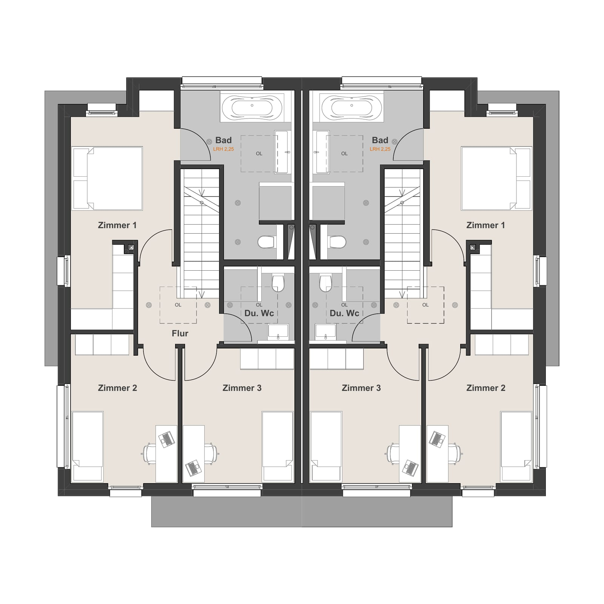
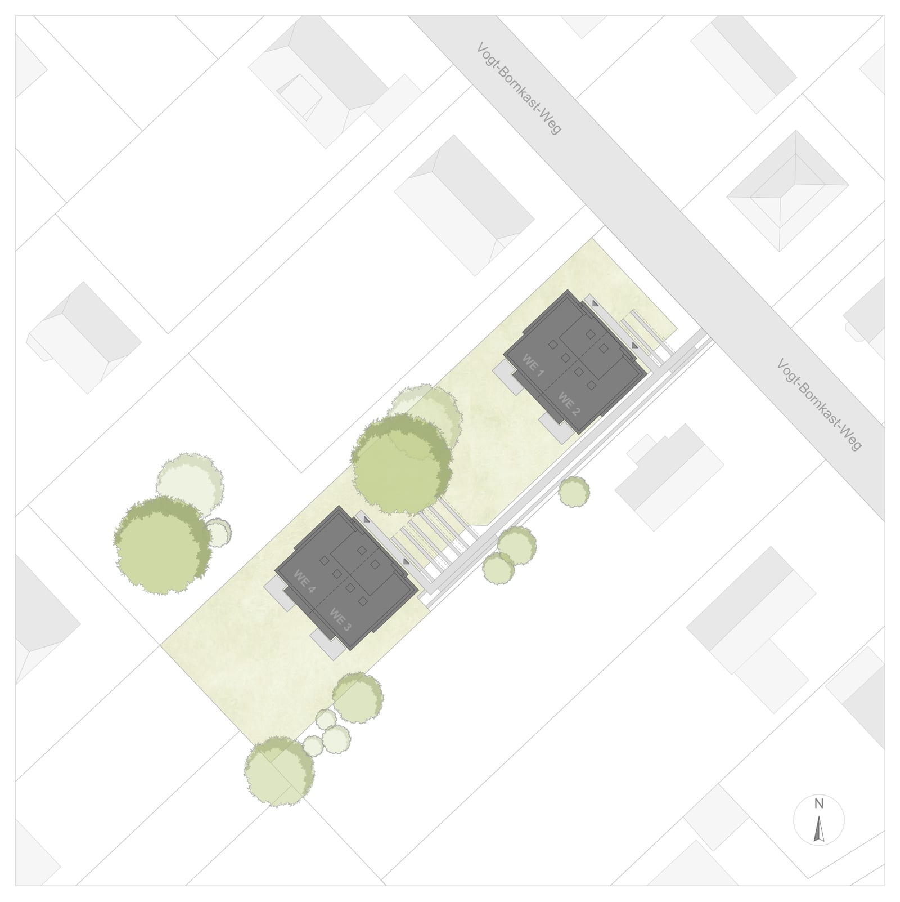
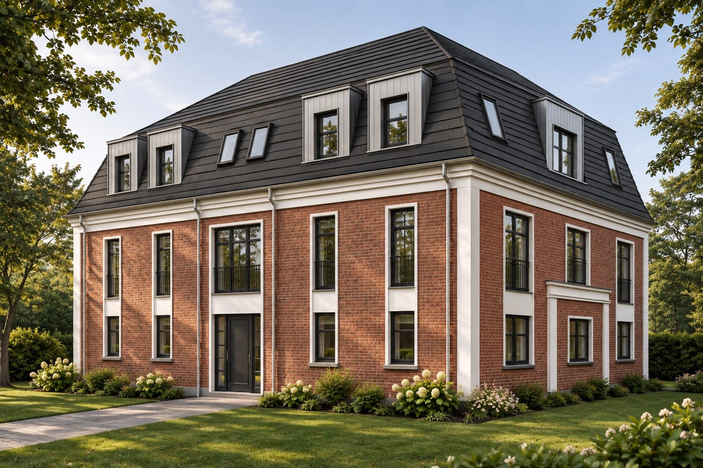

Jetzt entdecken · Hamburg-Schnelsen
Vogt-Bornkast-
Weg 6.
Zwei moderne Doppelhäuser. Vier neue Zuhause mit eigenem Garten in Hamburg-Schnelsen.
- Wohneinheiten
- 4
- Zimmer je Haus
- 5
- Wohn-/Nutzfläche je Wohneinheit
- ca. 134 m²

Das Projekt
Ihr neues Zuhause
in Hamburg-Schnelsen.
Helle Fassaden, dunkler Klinker und große Fenster bestimmen die Architektur. Im Erdgeschoss bildet der offene Wohn- und Essbereich mit rund 43,5 m² den Mittelpunkt des Hauses. Die Terrasse verbindet ihn mit dem eigenen Garten.
Im Dachgeschoss liegen drei Zimmer, ein Bad und ein Dusch-Bad – Platz für Familien, Homeoffice und Gäste.
Die Häuser sind fertiggestellt und bezugsfertig.
5 Zimmer auf ca. 134 m²
Offener Wohn- und Essbereich im Erdgeschoss, drei Zimmer im Dachgeschoss.
Eigener Garten, Terrasse & Stellplatz
Platz zum Entspannen direkt am Haus.
Bad, Dusch-Bad und Gäste-WC
Dazu Abstell-, Vorrats- und Haustechnikraum.
Wärmepumpe & Photovoltaik
Luft-Wasser-Wärmepumpe und Photovoltaikanlage, Energieeffizienzklasse A+.
Besichtigung auf Anfrage
Vereinbaren Sie einen persönlichen Termin und lernen Sie die Häuser kennen.
Einblicke
Ein Haus zum Ankommen.
5 Aufnahmen · zum Vergrößern antippen
Objektdaten
Das Projekt im Überblick.
| Standort | Hamburg-Schnelsen |
|---|---|
| Adresse | Vogt-Bornkast-Weg 6 |
| Projekt | 2 Doppelhäuser · 4 Wohneinheiten |
| Wohn-/Nutzfläche | ca. 134 m² je Wohneinheit |
| Zimmer | 5 |
| Geschosse | Erdgeschoss und Dachgeschoss |
| Sanitär | Bad, Dusch-Bad, Gäste-WC |
| Außenbereich | Eigener Garten, Terrasse, Stellplatz |
| Heizung | Luft-Wasser-Wärmepumpe |
| Energieversorgung | Photovoltaikanlage |
| Energieeffizienzklasse | A+ |
| Baufortschritt | Fertiggestellt und bezugsfertig |
Ihr neues Zuhause
Vier Wohneinheiten.
Persönliche Beratung.
Welche Doppelhaushälfte passt zu Ihren Vorstellungen? Gerne beraten wir Sie persönlich und zeigen Ihnen die Häuser vor Ort.
Besichtigung anfragenPreisliste
Kaufpreise.
Die Kaufpreise verstehen sich für die bezugsfertigen Doppelhaushälften inklusive Grundstücksanteil, Gartengestaltung und sämtlicher Baunebenkosten für Hausanschlüsse, Außenanlagen etc.
| Haus | Wohn-/Nutzfläche | Zimmer | Grundstück | Kaufpreis |
|---|---|---|---|---|
| Doppelhaus 1 | ca. 134 m² | 5 | 407,06 m² | 951.500 € |
| Doppelhaus 2 | ca. 134 m² | 5 | 231,58 m² | 941.500 € |
| Doppelhaus 3 | ca. 134 m² | 5 | 268,97 m² | 996.500 € |
| Doppelhaus 4 | ca. 134 m² | 5 | 360,44 m² | 996.500 € |
Die Kaufnebenkosten (wie Notarkosten und Grunderwerbsteuer) sind vom Käufer zu tragen. Es fällt keine Maklercourtage an.
Energieausweis
Pflichtangaben nach § 87 GEG.
Energieausweis vom 17.11.2026, gültig bis 16.11.2036.
| Art des Energieausweises | Energiebedarfsausweis |
|---|---|
| Endenergiebedarf | 25,1 kWh/(m²·a) |
| Wesentlicher Energieträger | Strom-Mix (Wärmepumpe) |
| Baujahr laut Energieausweis | 2026 |
| Energieeffizienzklasse | A+ |
Grundrisse & Unterlagen
Raum für Ihre Vorstellungen.

- Entree
- 7,20 m²
- Abstellraum
- 4,10 m²
- Vorratsraum
- 3,23 m²
- Gäste-WC
- 3,19 m²
- Haustechnikraum
- 8,79 m²
- Wohnen / Essen
- 43,50 m²
- Erdgeschoss
- 70,01 m²
- zzgl. Terrasse (anteilig)
- 4,40 m²
- Gesamt
- 74,41 m²

- Zimmer 1
- 15,78 m²
- Zimmer 2
- 12,16 m²
- Zimmer 3
- 12,03 m²
- Bad
- 11,65 m²
- Dusch-Bad
- 4,38 m²
- Flur
- 3,90 m²
- Dachgeschoss
- 59,90 m²

Zwei Doppelhäuser mit vier Wohneinheiten (WE 1–4) auf dem Grundstück am Vogt-Bornkast-Weg.
Exposé zum Vogt-Bornkast-Weg
Alle Informationen in einem Dokument.
Entdecken Sie die Häuser, Grundrisse und Ausstattungsdetails im Exposé.
Der Standort
Hamburg-Schnelsen.
Hier beginnt Zuhause.
Das Projekt liegt in ruhiger Lage am Vogt-Bornkast-Weg 6 in Hamburg-Schnelsen. Grüne Rückzugsorte und eine gewachsene Nachbarschaft prägen das Umfeld.
- Einkaufsmöglichkeiten, Cafés und Restaurants in unmittelbarer Nähe
- Schulen und Kindergärten im direkten Umfeld
- Hamburger Innenstadt in rund 25 Minuten erreichbar
Lernen Sie bei einem Besuch die Häuser und ihre Nachbarschaft kennen.
Besichtigung anfragenPersönlich für Sie da
Lernen Sie Ihr neues
Zuhause kennen.
Sie interessieren sich für eine der Doppelhaushälften? Wir freuen uns auf Ihre Fragen und einen persönlichen Besichtigungstermin.

Vorschau · Neues Projekt
Wählingsweg 24
6 Eigentumswohnungen in Hamburg-Schnelsen.
Am Wählingsweg 24 entsteht unser nächstes Wohnbauprojekt: eine klassische Stadtvilla mit Klinkerfassade, Gauben und hohen Sprossenfenstern. Alle Details zu Wohnungen, Grundrissen und Ausstattung finden Sie im Exposé.